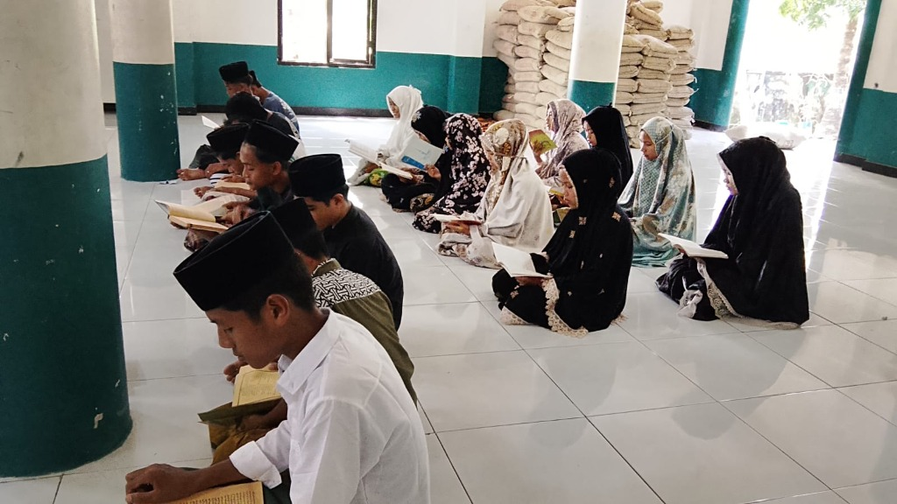
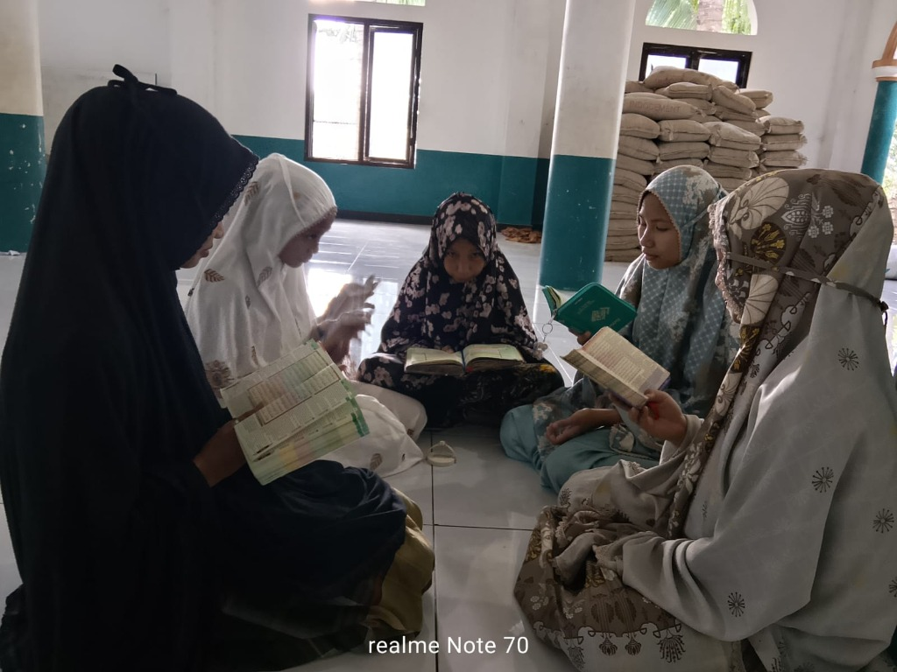
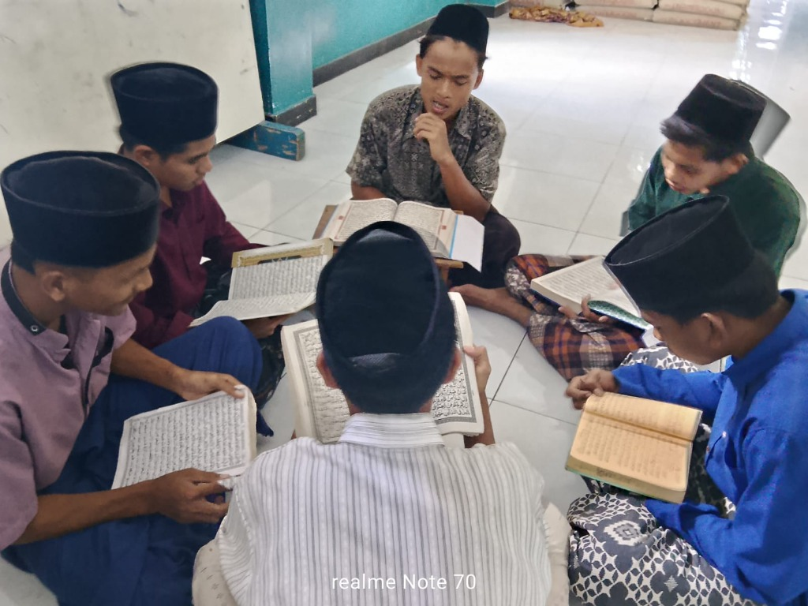

LKSA Nurul Muttaqin didirikan dengan niat tulus untuk menjadi rumah yang aman dan nyaman bagi anak-anak yatim piatu dan dhuafa. Kami berkomitmen memberikan pengasuhan yang layak, pendidikan yang berkualitas, serta bekal keterampilan hidup untuk masa depan mereka.
"Menjadi lembaga pelayanan sosial yang unggul dalam mewujudkan generasi mandiri, berakhlak mulia, dan berguna bagi agama, nusa, dan bangsa."
Update terbaru kegiatan santri dan program lembaga
Akses eksklusif untuk Dinas Sosial dan Pengurus LKSA

